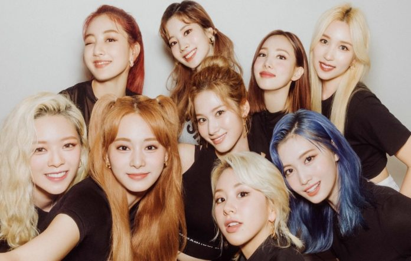

The amazingly well known Twice. Here's a list of whos's who...

First person we're going to talk aobut is Jihyo aka Park Jih-yo.Park Ji-hyo, known mononymously as Jihyo, is a South Korean singer. She is the leader and vocalist of the South Korean girl group Twice, formed by JYP Entertainment in 2015.
Born: 1 February 1997 (age 27 years), Guri-si, South Korea
Height: 1.6 m